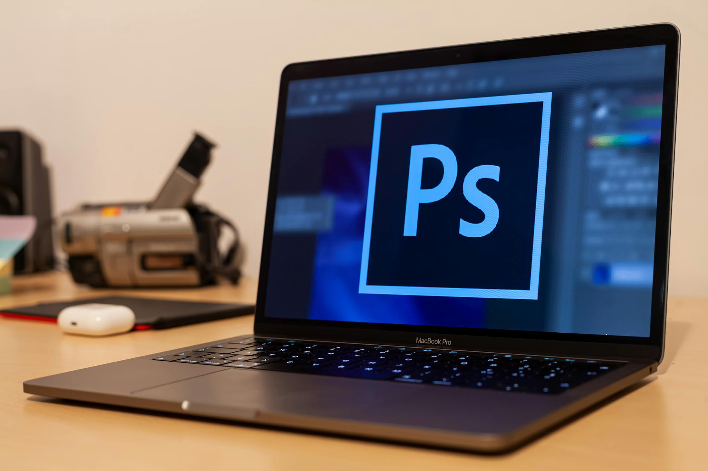
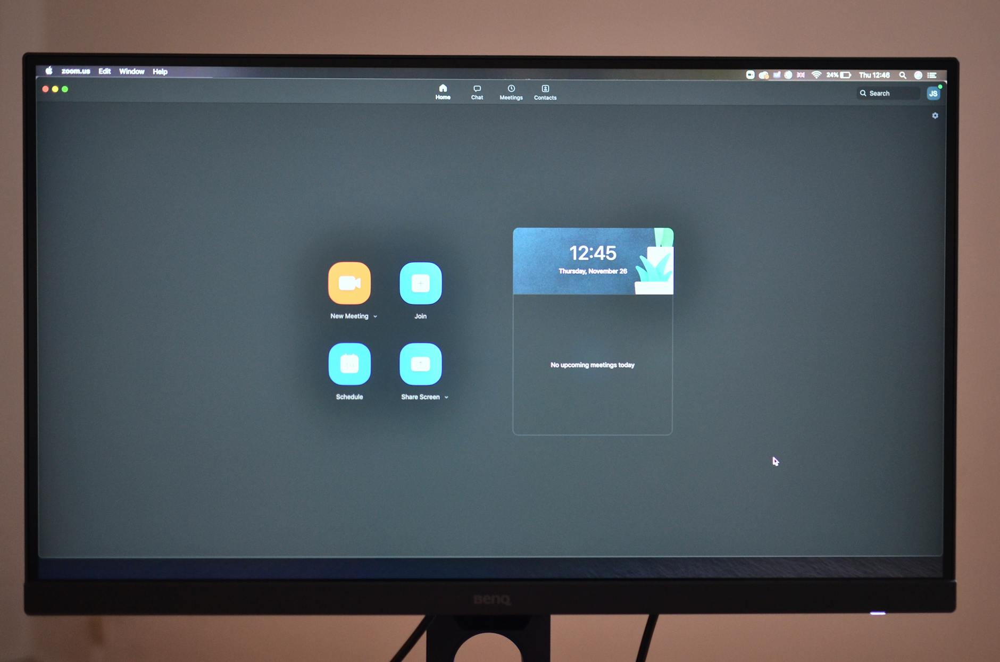

TL;DR
ClickUp provides structured task management ideal for deadlines, while Notion's flexibility is great for creative workflows. Choosing between them depends on your project's nature.
Budget wisely; ClickUp starts at $5/user/month for advanced features. Notion is $4/month for enhanced collaboration. Make your decision based on current and future needs.
Quick Verdict
If you're torn between ClickUp and Notion for managing your side hustle, here's the quick takeaway: ClickUp offers a structured approach ideal for task management, while Notion provides a flexible, creative workspace.
If your side hustle relies on tight deadlines and a clear task hierarchy, choose ClickUp. However, if you thrive in a freeform environment where you can document ideas alongside tasks, Notion may be your better option.
Consider your workflow deeply as it can shape your productivity journey.
Who Should Stay Free and Who Should Upgrade

Different types of users will benefit differently from ClickUp and Notion. Freelancers and solo entrepreneurs often gravitate toward ClickUp for its detailed task management features.
Its free tier supports up to 100 tasks per user, ideal for simple side gigs. This tier avoids unnecessary costs initially. Conversely, if you're a creative professional, you might find Notion's free version quite sufficient, given its customizable workspace for note-taking and project management without advanced features.
However, as your side hustle scales, the limitations of these free tiers can become evident; ClickUp’s task overload can lead to confusion, while not being equipped with premium features in Notion might hamper your project’s progress.
Thus, staying within the free plan must be a calculated decision reflective of your specific needs.
Where Premium Starts Paying for Itself

Understanding when to transition to a paid plan is crucial for your workflow efficiency. ClickUp’s premium plan, starting at $5 per user per month, unlocks automation features that can save countless hours.
For example, setting up recurring tasks can reduce manual input significantly. On the other hand, Notion's premium plan begins at $4 per month, offering increased file uploads and collaboration options.
If you're managing a team, these features can facilitate smoother operations.
Yet, what's often overlooked are the hidden costs associated with features that may seem attractive but don’t deliver ROI. For instance, additional features in both platforms, while seeming beneficial, can clutter your workspace and create inefficiencies.
Making the leap to premium should be informed by a projection of how much time your side hustle investment will save you.
A Real Setup or Switching Scenario
Imagine someone managing a photography side hustle using Notion but feeling overwhelmed by its layout as client projects pile up. Switching to ClickUp for its structured task management could look something like this: 1. Evaluate Needs: Analyze the limitations in Notion after 2 months of management. 2. Trial Period: Start a 14-day free trial with ClickUp to compare task effectiveness. 3. Export and Import: Take a week to export existing data from Notion and import it to ClickUp, configuring tasks appropriately. 4. Adjust Workflows: Spend an additional week dedicated to setting up custom workflows in ClickUp, accommodating any team collaboration needs. 5. Full Migration: After a month of testing, fully transition to ClickUp if it meets expectations; otherwise, reassess in Notion.
This process highlights the timing, effort, and potential pitfalls involved in switching tools, with clear markers of when to decide.
Mistakes, Hidden Costs, and Overkill Choices
When diving into ClickUp or Notion, avoid common mistakes that can bog down your side hustle. A frequent pitfall is falling for the allure of countless features—particularly in ClickUp—only to find they complicate rather than streamline your workflow.
Spending time configuring features that aren't essential to your operations can lead to frustration.
For instance, a user may be tempted to automate every aspect of their project management, only to end up with convoluted setups that require more attention than manual processes. This complexity can mask simple tasks with unnecessary clutter.
Additionally, keep an eye on premium add-ons that promise enhanced capabilities; if they don't translate to tangible productivity increases, they might not be worth the extra costs. Make deliberate choices to simplify rather than overload your workflow.
Best Pick by User Type
Choosing the right tool ultimately hinges on your current growth stage and specific needs. Beginners might prefer Notion for its no-cost entry and adaptability in creating to-do lists and simple notes.
As you progress and your tasks become more intricate, ClickUp stands out as a structured tool with features such as Gantt charts and time tracking.
For example, a graphic designer just starting might find Notion sufficient, but a web developer juggling multiple client tasks would benefit immensely from ClickUp’s detailed tracking capabilities.
Long-term success requires evaluating which tool not only fits current needs but can grow with you. Reflect on your workflow consistency when determining your ‘best pick’—making a choice that aligns seamlessly with your trajectory is paramount.
FAQ
What are the main differences between ClickUp and Notion?
ClickUp focuses heavily on task management with structured features like Gantt charts, while Notion offers a flexible workspace for notes and project organization.
Which tool is better for beginners managing their first side hustle?
Notion is often better for beginners due to its free version and adaptable interface, but ClickUp can offer stronger task management once users are familiar with managing multiple responsibilities.
This article has been reviewed for practical usefulness and is updated when information changes.
Choose faster
Use this article to narrow the field then compare your top options by price, setup friction, and upgrade risk.
Search more articles
Find related tools, workflows, and guides.
Photo credits
- Photo 1: Daniil Komov via Pexels
- Photo 2: Luca Sammarco via Pexels
- Photo 3: Skylar Kang via Pexels
- Photo 4: cottonbro studio via Pexels
- Photo 5: cottonbro studio via Pexels